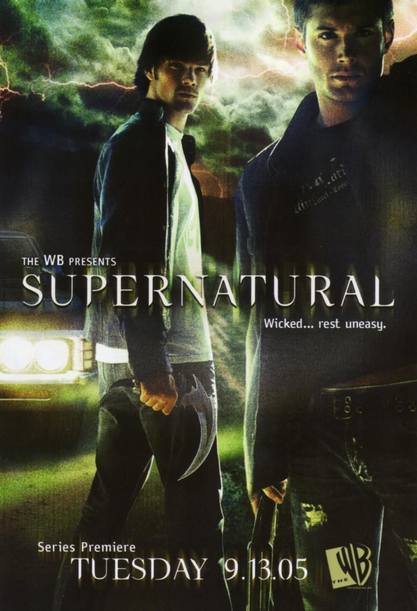
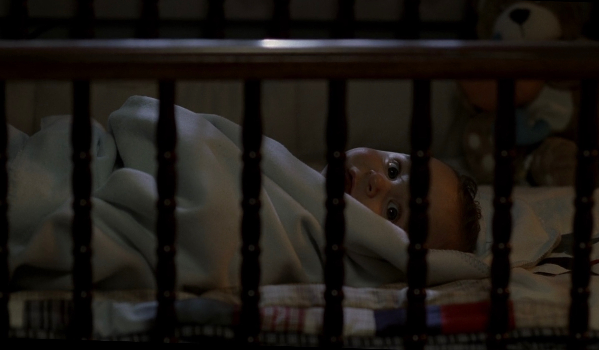
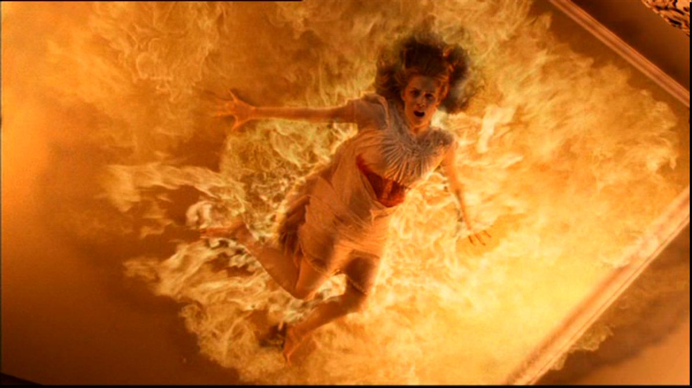
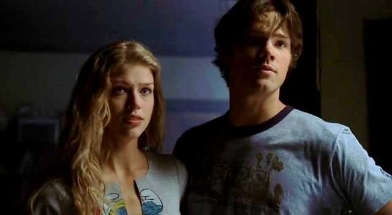
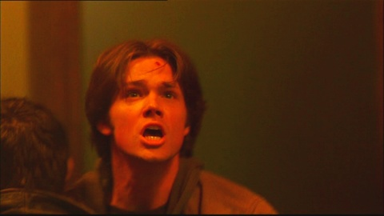
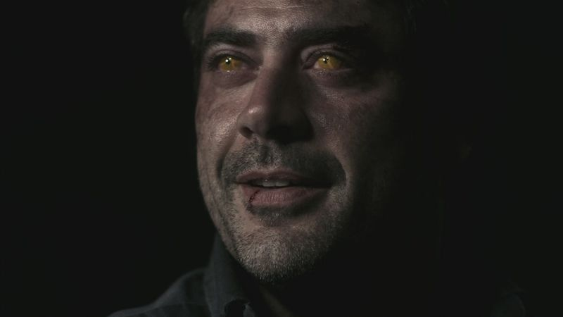
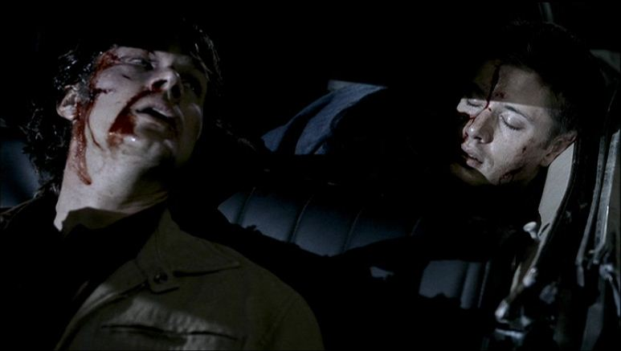

Temporada 1

No início da primeira temporada aparece Mary, John, Dean e Sam como uma família
normal e feliz. Sam no berço, e alguém derramando sangue em sua boca. As luzes
começam a piscar, quando Mary, levanta-se da cama para ver o que está acontecendo,
e vai até o quarto de Sam, deparando-se com alguém ao lado do berço de seu filho,
pensa que e John e nao se preocupa, quando esta no corredor uma luz da parede
começa a piscar ela mexe um pouco até voltar ao normal, ouve barulhos no andar de
]baixo desce e percebe que a tv esta ligada e John esta dormindo no sofá. Mary sai
correndo chamando por Sam, entra no quarto e grita, John acorda e corre até o quarto,
pensa que esta tudo bem mas algumas gotas caem do teto no berço quando verifica, vê
Mary queimando no teto.


Passam alguns anos, e os garotos estão adultos. Sam está na Universidade Stanford,
prestes a ingressar no curso de Direito, quando seu irmão, Dean, aparece, afirmando que
o pai deles, John, desapareceu durante uma caçada. Dean solicita a ajuda de Sam, mas ele
nega-se a ir, devido a uma entrevista de uma bolsa integral para a faculdade de direito,
além de ter antigas mágoas com seu pai, John. Mesmo relutante Sam concorda em ajudar Dean.
Então, os irmãos partem em uma viagem, em busca do pai. Sem encontra-lo, Sam retorna para
casa, e vê sua namorada, Jessica, morrer da mesma forma que sua mãe, queimada no teto. Sam
sente-se culpado por não a ter protegido e por esconder de Jessica, que sua família caçava
coisas sobrenaturais. Por estes acontecimentos, Sam desiste da Universidade para caçar o
quê ou quem matou sua namorada. Ao mesmo tempo em que caçam o quê ou quem matou Jessica e
Mary, Sam e Dean procuram pelo paradeiro de John, e nas cidades que passam, solucionam casos
sobrenaturais.


Algum tempo depois, os rapazes encontram John, que lhes revela sobre a criatura que procuram
ser um demônio, que planeja usar o Colt, um revólver místico capaz de matar qualquer coisa.
Contudo, ao encontrarem o demônio, denominado Olho Amarelo, não o matam, pois este possui
John, e Sam não é capaz de atirar em seu pai. Após não conseguirem matar o demônio Olho
Amarelo, os três Winchesters sofrem um acidente automobilístico, causado por um demônio
desconhecido, e ficam gravemente feridos, deixando o Impala destruído.

